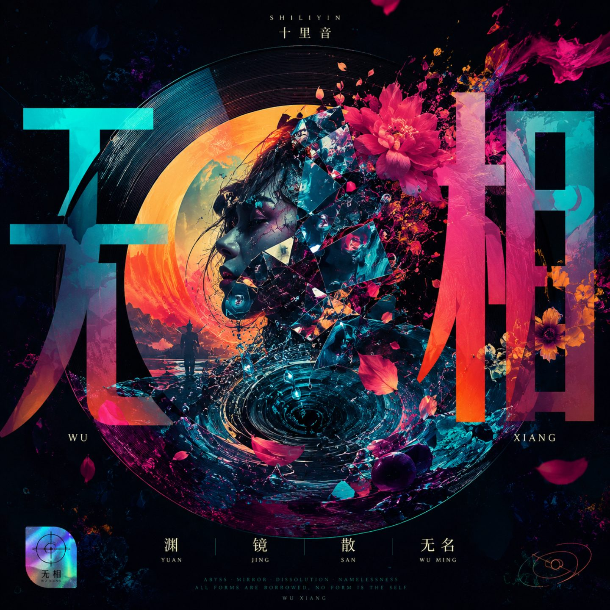

艺人介绍
相传十里音降生时，一声啼哭响彻四野，方圆十里皆闻其声，因此得名——十里音。她相信，真正能够传得很远的，不只是声音，而是声音背后的思想。
她以流行音乐为载体，将《红楼梦》《道德经》《庄子》等东方经典重新解构，融合现代音乐语言，形成独树一帜的「东方概念系」创作风格。旋律易于传唱，文字克制凝练，被乐迷称为「会写哲学的唱作人」。
早期作品以复古 Disco 为核心，围绕独立、自信、女性表达展开创作，《姐姐出门了》《姐姐的爱很金贵》等作品广受关注。
随着专辑《无相》的发布，她开始从情绪表达转向精神表达，围绕「渊、镜、散、无名」四个哲学命题展开创作，将东方思想重新翻译成当代人能够理解的音乐语言。她希望，每一首歌都不是提供答案，而是带领听众重新认识自己。
创作身份AI原创音乐人，词、曲、唱一体化表达。
音乐方向东方概念系、哲学流行、东方未来主义。
文本气质克制、凝练，以东方经典和现代情绪互相照见。
代表阶段从复古 Disco 的女性表达，进入《无相》的精神表达。
Concept Album
《霓虹金》专辑介绍
《霓虹金》是十里音早期复古 Disco 与都市女性表达阶段的概念专辑。它从霓虹、舞台、失重和落地出发，写一个人在城市声光中重新确认自我。后续可继续补充正式专辑文案。
这组作品不是简单的跳舞音乐，而是一次从进入幻境、悬浮、醒来，到重新落地的身体旅程。
《霓虹金》爆发入场，重力作废。
《晃》悬浮无向，漂在虚空。
《醒》混沌松动，意识回笼。
《铿锵》实心落地，带着新的重量回来。

Concept Album
《无相》专辑介绍
《无相》是一场往回走的旅程。
四首作品环环相扣，借《红楼梦》的镜花水月、葬花归尘，与《道德经》"渊兮似万物之宗""无名天地之始"互文，写出一条当代人的破执之路：先问"渊"在何处，再照"镜"中两面，然后学会"散"手放下，最终归于"无名"。
这不是一张让人忘掉烦恼的专辑，而是一张让人看见自己的专辑。
《渊》借《红楼梦》太虚幻境反写：宝玉有仙子引路、有命运册子，到渊口却统统失效。渊，是光、重力、皮囊都还未借出之前的地方——不是终点，是比起点更早的起点。往下走，不是坠落，是回家。
《镜》化用风月宝鉴的传说，跛足道人说"千万不可照正面"，十里音说"他说错了"。镜子照见的不是美丑，是比美丑更早存在的、完整的自己。怕照见正面的人，怕的不是丑，是怕看见自己有多完整。
《散》反写黛玉葬花的伤春。她以为散是悲剧，十里音却说，散了手才是自己的——原来不是谁放了手，是手本来就自由。一首写给所有不敢放手之人的歌。
《无名》借顽石下凡又归位青埂峰的轮回，照见《道德经》"无名天地之始"。光、重力、皮囊、连名字都一一脱下后，剩下的那个，才是从一开始就一直都在的自己。专辑的终章，也是闭环的完成——"不需要镜子了"。